Implementación con Relés
Recordemos el proceso industrial de separación de cajas por altura que estudiamos como aplicación al final de la última unidad.


Las condiciones de funcionamiento del sistema de Cintas transportadoras en "T" eran:
- Se alimenta la cinta transportadora principal con dos tipos de cajas: “cajas altas” o “cajas bajas”.
- Al final de esta cinta se tiene un sistema de dos sensores ópticos tipo barrera, “S_ALTO” y “S_BAJO”, que permiten detectar la altura de la caja que llega.
- Detectada el tipo de caja en “caja alta” ó “baja”, se activa una de las dos cintas transportadoras secundarias según corresponda, separando las cajas altas hacia un lado, y las cajas bajas hacia el otro.

La tabla de verdad del sistema, considerando una alarma en caso de falla de sensado era:

Antes de continuar con la implementación con lógica cableada, es necesario conocer la simbología y el conexionado de los sensores ópticos a fin de poder representarlos en los esquemas eléctricos.
Hay una gran variedad de sensores ópticos, y cada uno tiene su forma de conectarse en función del tipo de sensor que sea. Nosotros vamos a considerar que los sensores utilizados en la aplicación son de 3 hilos (3 cables de conexión).
Su simbología es:
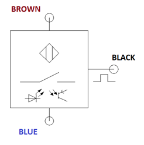
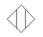 Representa que el sensor es un sensor de proximidad (no requiere contacto para sensar).
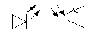 Representa un diodo emisor de luz, y por tanto que es de tipo óptico.
Y los 3 hilos o conexiones codificados por color corresponden a:
- BROWN y BLUE son para la alimentación de la electrónica del sensor. BROWN se conectan a +24Vcc y BLUE a GND.
- La salida de señal del sensor en caso de detección se da BLACK. Vamos a considerar que al detectar presencia nuestro sensor envía +24Vcc por BLACK.
Un ejemplo de conexión para el sensor sería el siguiente:
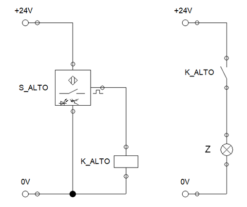
El sensor S_ALTO se alimenta con 24Vcc en las conexiones BROWN y BLUE.
La salida BLACK se utiliza para alimentar la bobina de un relé que llamamos “K_ALTO” para que quede identificada correctamente la dependencia con el estado del sensor.
En este ejemplo, al pasar una caja alta y activarse S_ALTO, enviaría 24Vcc a la bobina K_ALTO, que en el circuito de potencia (en este caso también alimentado con 24Vcc) cerraría el contacto NA asociado y encendería el indicador luminoso Z.
Ahora sí, pensemos la implementación para los actuadores M1, M2 y ALARMA:
-
Motor M1: [CAJAS ALTAS]
La activación de M1 se daba de acuerdo a la siguiente función:
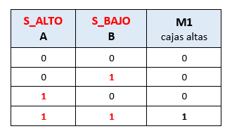

La implementación con relés será:
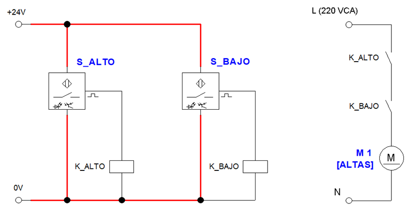
Donde los dos sensores se alimentan por separado, y activan respectivamente las bobinas de relés K_ALTO y K_BAJO.
Dos contactos NA de cada bobina se conectan en serie en el circuito de potencia, logrando que el motor M1 sólo se encienda si ambos sensores detectan presencia.
Se cumple la función AND buscada: 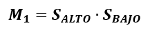
-
Motor M2: [CAJAS BAJAS]
Para el motor M2 de la cinta que traslada las cajas bajas, recordemos que la tabla de verdad y función lógica corresponden a:
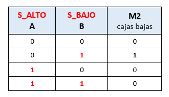

Por lo que el circuito con relés quedaría:
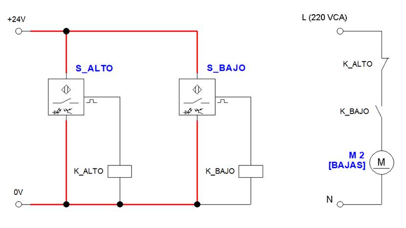
Aquí se observa que utilizamos un NC de K_ALTO en el circuito de potencia.
Esto implica que el motor M2, sólo podría funcionar si S_ALTO no está detectando (el contacto NC de K_ALTO permanece cerrado), y al mismo tiempo S_BAJO sí está detectando caja (el contacto NA de K_BAJO cierra).
Está condición, y ninguna otra, es la que necesitamos para que M2 funcione según nuestra tabla.
-
ALARMA: [ERROR DETECCIÓN]
Por último, implementemos también la alarma, considerándola un indicador luminoso que enciende al dectectar un error en la detección de los sensores.
Si recordamos el análisis que habíamos realizado, teníamos que:

Presentemos directamente el circuito completo, con todas las cargas conectadas: M1, M2 y ALARMA:

Que cumple con las condiciones de la tabla de verdad completa:
(En el circuito se muestra la primera condición S_ALTO = 0, y S_BAJO = 0)

Verifiquemos las otras condiciones:
- Para S_ALTO = 0 y S_BAJO = 1, se enciende sólo M2 = 1:
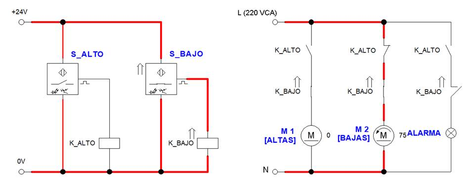
Para S_ALTO = 1 y S_BAJO = 0, se enciende sólo ALARMA = 1:
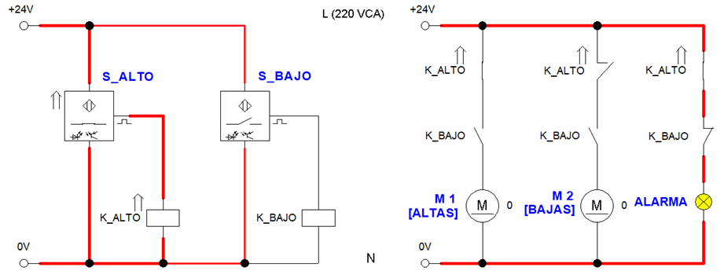
- Y, por último, para S_ALTO = 1 y S_BAJO = 1, se enciende sólo M1 = 1:
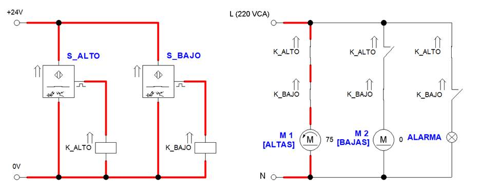